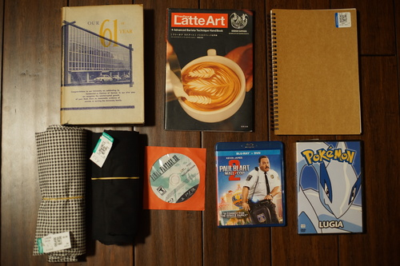
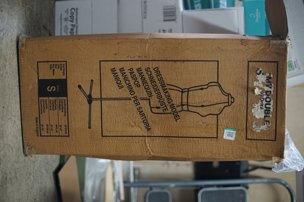
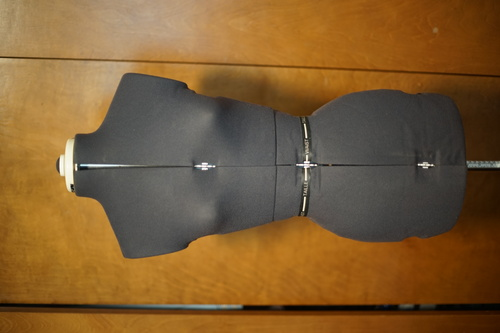
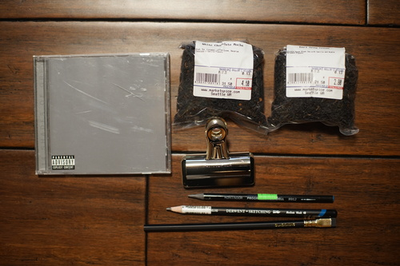

Well... I did it!! I'm not sure I should have done it but I did it anyway. You'll have to forgive me.
It's a latte art book?!?! I NEED this for my doll cafe!!!
And...
 I've been looking for a dressform in my size for... quite a few years now! I find them decently often, but they're never right. Always too big, right size but eaten by rats, over $150. I'm at the smallest end for this one. I think the petite size from this model would have also worked, but it is indeed much smaller than the current petite model based off the measurements in the manual.
I found one from 1992 in decent condition in size S for $25. It came in the box with accessories, but the box is in terrible condition and going to be tossed. I'm not really sure where I'll find another suitable container for it.
The plastic parts are brittle already. I broke one of the pieces already, but it wasn't necessary for use and I think I can find some sort of replacement tube clamper.
The only problem is I don't have anywhere to put it!! Why did it have to show up right now?? I can pull out my machine and sew, but I don't have a lot of space for longer term projects.
A must is to have a place to work where you can leave your work set up and no one to say "Oh! put that junk away." A corner in the garage or the store room is fine, any place where you can leave your work, for the moment you stash it away in a drawer, BROTHER OR SISTER YOU ARE THROUGH.
There's nothing like making a huge gigantic mess. It is truly The Best.
I also have for you a Seattle haul!
Uncensored. I really like this album.
Smells SO GOOD
Really needed a Big Clip in the moment. I think Ryan wants it more so I'm giving my Big Clip impulse buy to him.
These are basically the same pencil but I was mad I found the Koh-I-Noor after for cheaper.
I have been searching long and hard for the perfect pencil that will elevate my drawing skill to god-like levels, and I think this is it, boys.
I was very pleased to see there are signs up around the waterfront to remind tourists that you do not need to pay in a CD scam! If a Gentleman of Color approaches you with his new mix tape, demo, or whatever, walk away!!! Do not make eye contact! Ignore him! If he manages to force the CD in your hands and you cannot give it back, drop the CD! WALK AWAY!!! PLEASE